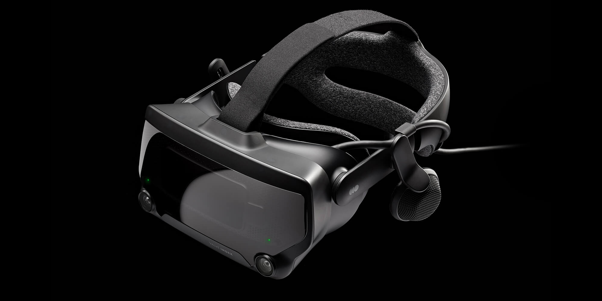

Valve apresenta o headset de realidade virtual Steam Frame
A Valve lançou o Steam Frame, um dispositivo de realidade virtual com funcionamento independente e integração com computadores. O produto representa uma novidade no setor de jogos e realidade virtual.
